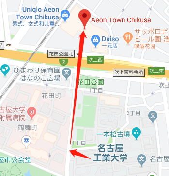
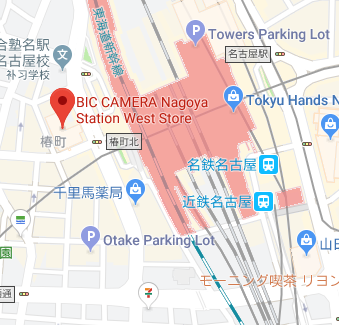
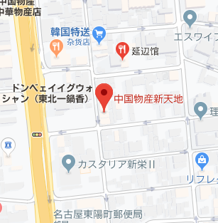
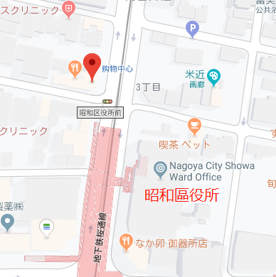
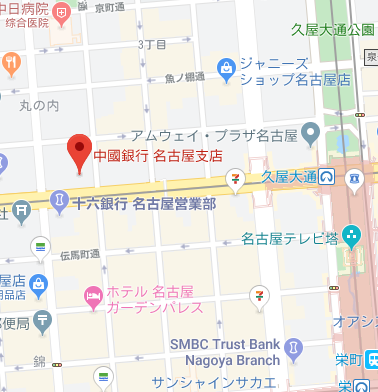
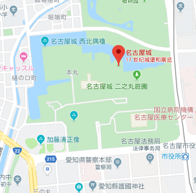
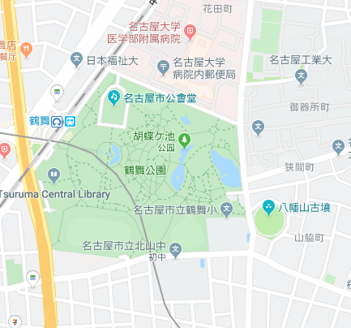
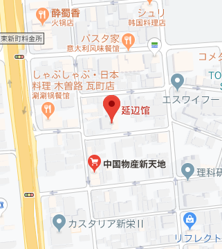
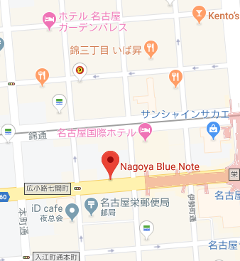
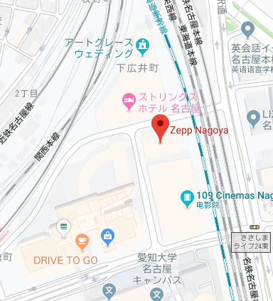

生活用品/電子設備/超市
〒464-0858 愛知県名古屋市千種区千種2丁目16-13
052-734-5300

〒453-0015 愛知県名古屋市中村区椿町6−9
052-459-1111

〒466-0016 愛知県名古屋市昭和区北山本町2丁目4-8
052-731-2922
〒466-0016 愛知県名古屋市昭和区北山本町2丁目6
052-733-2983
中華物產店
〒460-0007 愛知県名古屋市中区新栄1丁目24−28
052-265-5559

〒466-0027 愛知県名古屋市昭和区阿由知通3丁目14-8

銀行
〒460-0002 愛知県名古屋市中区丸の内3丁目23−20
052-957-2388

遊玩
〒460-0031 愛知県名古屋市中区本丸1−1
052-231-1700

〒466-0064 愛知県名古屋市昭和区鶴舞1丁目1
052-733-8340

飯店
〒460-0007 愛知県名古屋市中区新栄1丁目25−5
052-242-3130

音楽
〒460-0003 愛知県名古屋市中区錦3丁目22−20 ダイテックサカエビル
nagoya-bluenote.com
052-961-6311

〒453-0872 愛知県名古屋市中村区平池町4丁目60-7
zepp.co.jp
052-541-5758

為了防止圖片顯示不全需要增加如下文字，與本文內容無關，敬請忽視。